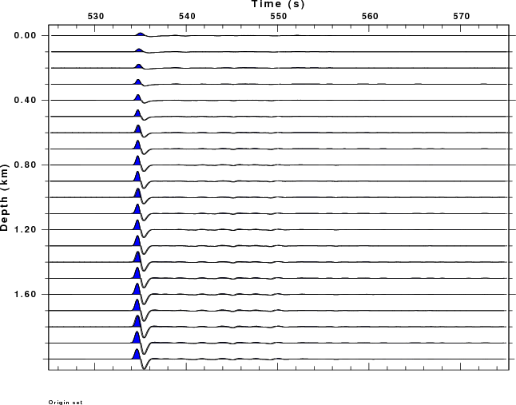

Introduction
This is a test using a local source model for South Korea to
imvestigate the effect of source depth of an explosion on the
teleseismic P-wave signal at an arc distance of 50 degrees.
The teleseismic propagation odel is tak135sph.mod which is also
used at the receiver. The vertical component wave forms are shown.
Example
The traces are plotted in true amplitude to show the effect of
depth on the obseved signal. Obviously the teleseismic T*
attenuation operator smooths out the distinct pP arrival
